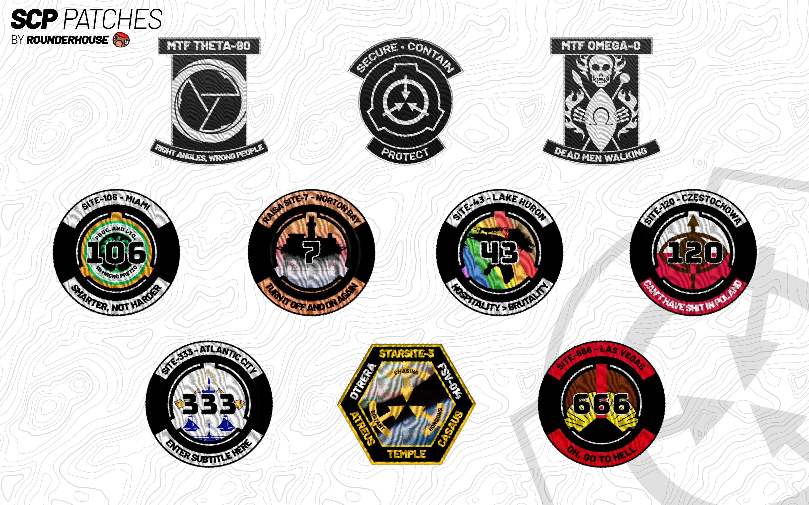

ASSORTED PROJECTS

STICKERS
I make and sell stickers of some notable SCP sites and MTFs on my Gumroad! I try to keep a rotating selection going, but you can find the link to the shop
here!

GOODNIGHT ROUNDERPEDE
I (inconsistently) have a podcast where I read a few stories from the Wanderer's Library in the form of bedtime stories! I don't do it as frequently as I should, but you can find it on
Spotify or
Anchor